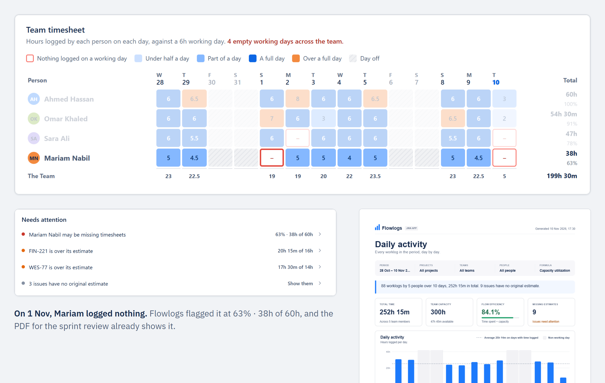

Flowlogs
تطبيق جيرا كلاود
الـ worklogs اللي فريقك بيسجّلها في جيرا، بقت timesheet للفريق وتقرير capacity وPDF جاهز يتبعت، من غير أي setup.
اكتشف: يوم شغل من غير تسجيل بيظهر بإطار أحمر في تايم شيت الفريق.
اتصرّف: Needs attention بتقولك مين وناقصه قد إيه بالنسبة لطاقته.
ابعت: دوسة واحدة وتقرير PDF نظيف بمقاس A4 جاهز للإدارة.
يعمل بتقنية Atlassian Forge · بياناتك لا تغادر جيرا · الأسماء العربي سليمة في كل تصدير

مجاني بالكامل
على Atlassian Marketplace
يقرأ سجلات جيرا القائمة
صفر مجهود إدخال مضاعف
تخزين أطلسيان السحابي
بياناتك بالكامل داخل جيرا
تصدير جاهز للعربي
الأسماء العربي سليمة في PDF وExcel وCSV

اليوم اللي متسجلش فيه حاجة بيتحاوط بإطار أحمر يلفت انتباهك فوراً.
قائمة واضحة بالزملاء اللي عندهم ساعات ناقصة بالمقارنة بطاقتهم الاستيعابية.
تقرير A4 متكامل أو شيت إكسل بضغطة زر للإدارة أو الكلاينت.
تفتح بروفايل كل واحد يدوياً عشان تعرف مين نسي يسجل ساعاته قبل الـ standup أو مراجعة نهاية الأسبوع.
تنزيل شيتات CSV وكتابة معادلات إكسل معقدة بس عشان تجاوب الإدارة عن نسبة استهلاك السبرنت.
التخطيط بدون معرفة من لديه طاقة إضافية، وما هي التاسكات التي تحرق الساعات بصمت وتتجاوز التقدير.
كل شخص وكل يوم متلونين حسب ساعات العمل. أي يوم عمل متسجلش فيه حاجة بيتحاوط بإطار أحمر واضح عشان تنبه الزملاء قبل الـ sprint review. اضغط على أي يوم فيه ساعات تنزل على تفاصيله.


إجمالي الساعات، الطاقة الاستيعابية، ونسبة كفاءة التدفق في الأعلى. مع قائمة Needs attention وتتبع تفصيلي لكل رقم من الشخص إلى المشروع إلى المهمة.
ملف PDF نظيف بقياس A4 يحتوي على الرسومات البيانية والتايم شيت، أو ملفات Excel وCSV تطابق ما تراه على الشاشة بالضبط بدون مجهود يدوي.

تثبيت مباشر في مساحة عمل Jira Cloud الخاصة بفريقك بصلاحيات الأدمن العادية دون أي تعقيد.
متواجد مباشرة داخل القائمة العلوية في جيرا بدون الحاجة لتسجيل حسابات خارجية أو كلمات سر جديدة.
الساعات المسجلة في جيرا بتظهر على طول في الجداول والرسوم البيانية.
تم بناء Flowlogs بالكامل على منصة Atlassian Forge السحابية والآمنة بدون أي خوادم خارجية أو وسيطة.
لا يمكن لأي مستخدم رؤية أكثر مما تتيحه له صلاحيات جيرا الأصلية والمجموعات المحددة له.
الإعدادات والعروض المحفوظة مخزنة حصرياً داخل بيئة أطلسيان السحابية المعتمدة.
صفر تحليلات خارجية، لا توجد خوادم طرف ثالث، أو قواعد بيانات تتبع وأكواد تجسس.
ملفات الـ PDF والإكسل يتم بناؤها وتوليدها داخل متصفحك مباشرة قبل التنزيل في جهازك.
مقارنة شفافة بين Flowlogs وتصدير شيتات الإكسل وحلول تتبع الوقت المؤسسية المعقدة.
| المعيار | Flowlogs | تصدير الإكسل | أنظمة تتبع الوقت المتكاملة (Paid Suites) |
|---|---|---|---|
| طريقة الإعداد | فوري (Native Forge) | تصدير يدوي أسبوعياً | أيام من تدريب الفريق والإعداد |
| التكلفة | مجاني ١٠٠٪ | مشمول في حزمة Office | اشتراك لكل مستخدم |
| تايم شيت الفريق | جدول تلقائي مع تنبيه الأيام الناقصة | جداول محورية يدوية ومعادلات | لوحة تحكم خارجية منفصلة |
| مقارنة الساعات بالتقدير | تجميع وتحليل فوري | معادلات VLOOKUP يدوية | نماذج معقدة ومخصصة |
| تقرير الـ PDF | تقرير تنفيذي A4 بضغطة واحدة | تنسيق ومعاينة طباعة من الإكسل | محرر تقارير مخصص |
| الفواتير وإدارة المدفوعات | غير مشمول (تركيز على الإنتاجية) | غير مشمول | ✓ إدارة كاملة للفواتير والعملاء |
* ملحوظة: Flowlogs مصمم خصيصاً لفرق السوفتوير وقادة الفرق الذين يحتاجون لمعرفة ساعات العمل واستيعاب الفريق بدون التعقيد وتكاليف الأنظمة المحاسبية الضخمة.
أيوه، مجاني على Atlassian Marketplace، من غير فترة تجريبية ولا حد لعدد المستخدمين.
أبداً. تم بناء التطبيق كـ Forge Native App، مما يعني أن الكود يعمل ويعالج البيانات مباشرة داخل بنية Atlassian التحتية الآمنة، بدون أي سيرفر خارجي.
على اليوم اللي الساعات اتسجلت فيه في جيرا، فتقرير الأسبوع اللي فات بيوريك اللي اتسجل فعلاً الأسبوع اللي فات. والـ capacity بتتحسب من عدد ساعات اليوم وأيام الشغل في الأسبوع اللي انت بتحددها.
يطبق التطبيق ذات نظام الصلاحيات المعتمد في مشروعك بجيرا؛ فلن يتمكن أي فرد من استعراض ساعات أي مشروع أو مهمة ليس مصرحاً له بمشاهدتها في جيرا.
الأسماء والنصوص العربي بتظهر صح على الشاشة وفي كل تصدير، بما فيهم الـ PDF. واجهة التطبيق نفسها بالإنجليزي.
لا تطبيقات جديدة لإقناع فريقك بتحميلها. فقط وضوح تام لما يتم تسجيله بالفعل في جيرا.
نزّل Flowlogs مجاناً